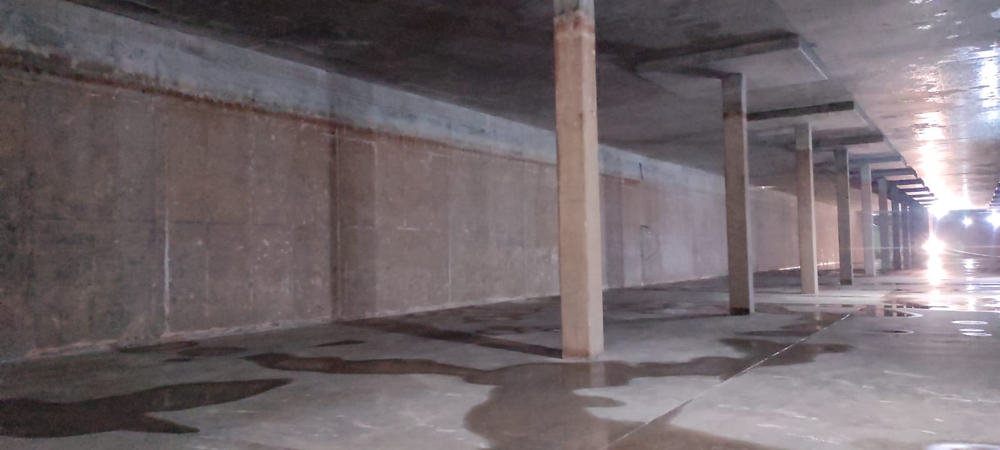
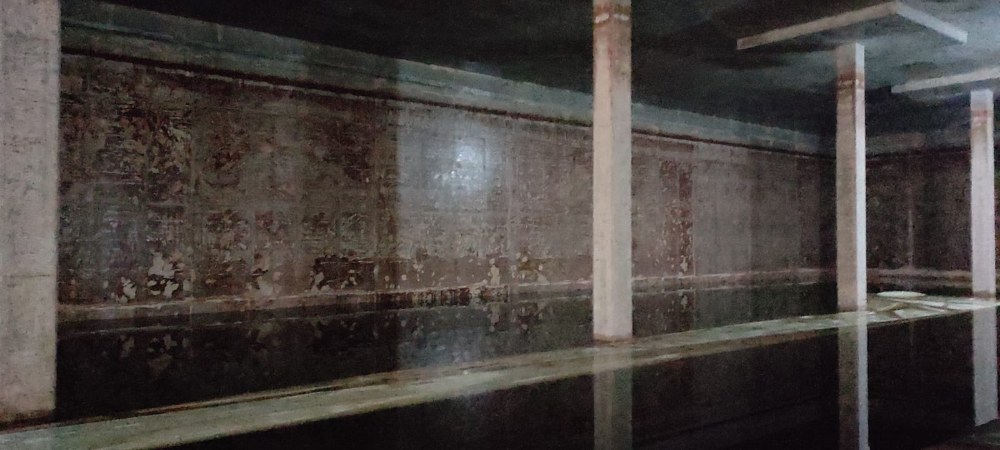
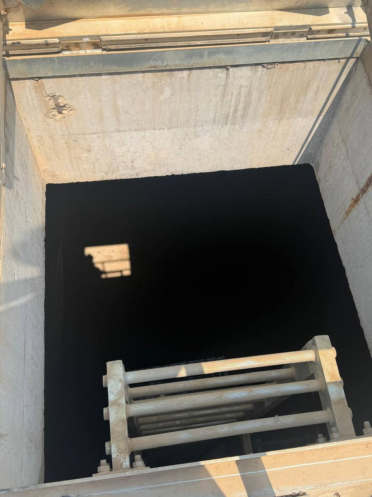

Sized to 900 × 650 × 450 mm. Parts from your sketch: two tracks, front suction hood with soft brush, vortex pump, hydrocyclone, polishing filter, sealed debris cartridge, battery pack, sonar and sensors, top lifting eye for the winch hook. Colours follow your slide-13 render (light grey body, dark tracks, blue brush) unless you prefer otherwise Q5.
On-screen text and operator screen
Reservoir



Concrete floor, walls and rows of square columns modelled from your photos, filled with clear water, lit by soft light rays from above. Water level per Q1.